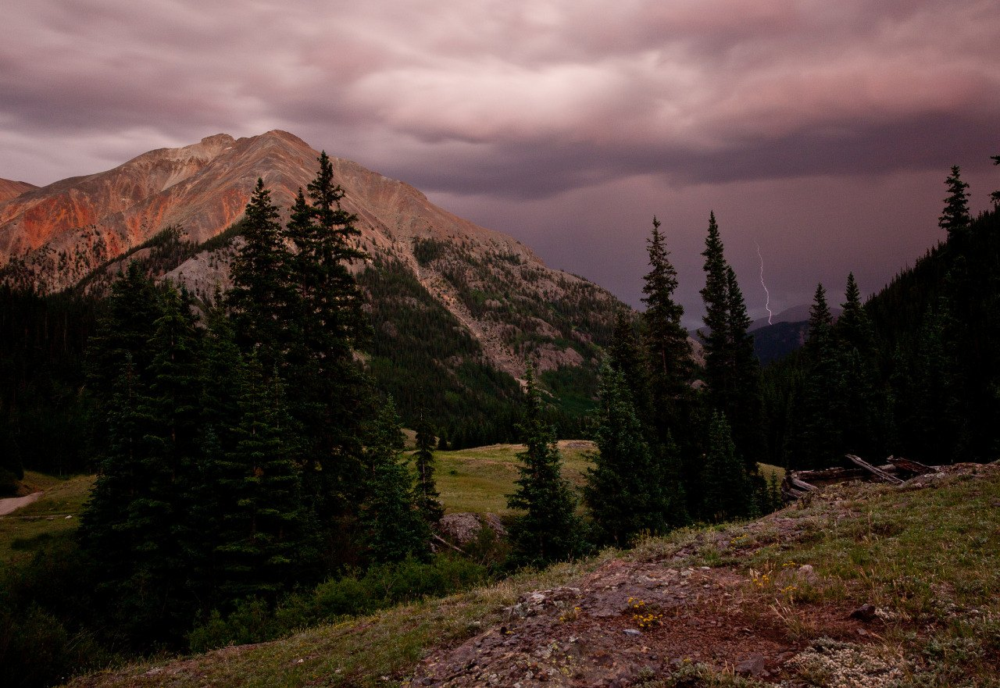
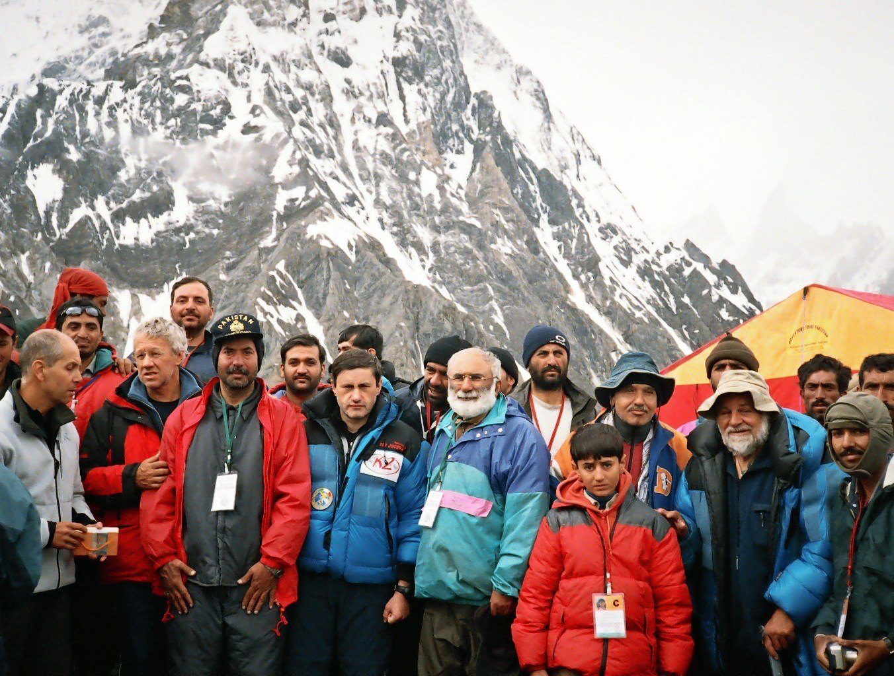
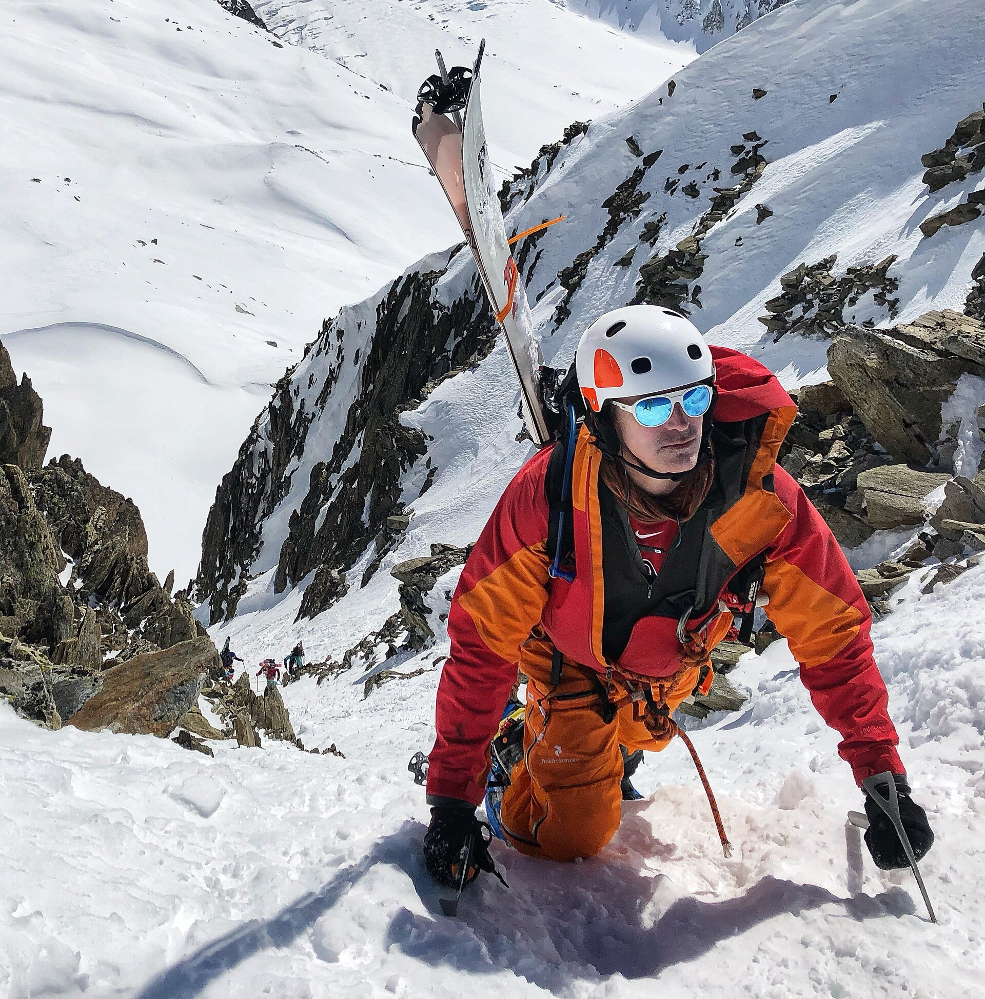
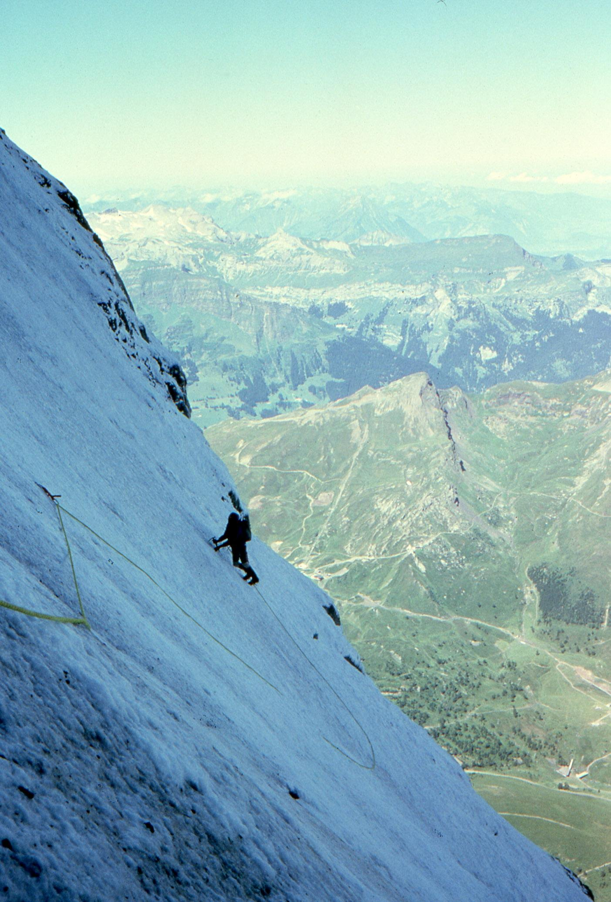
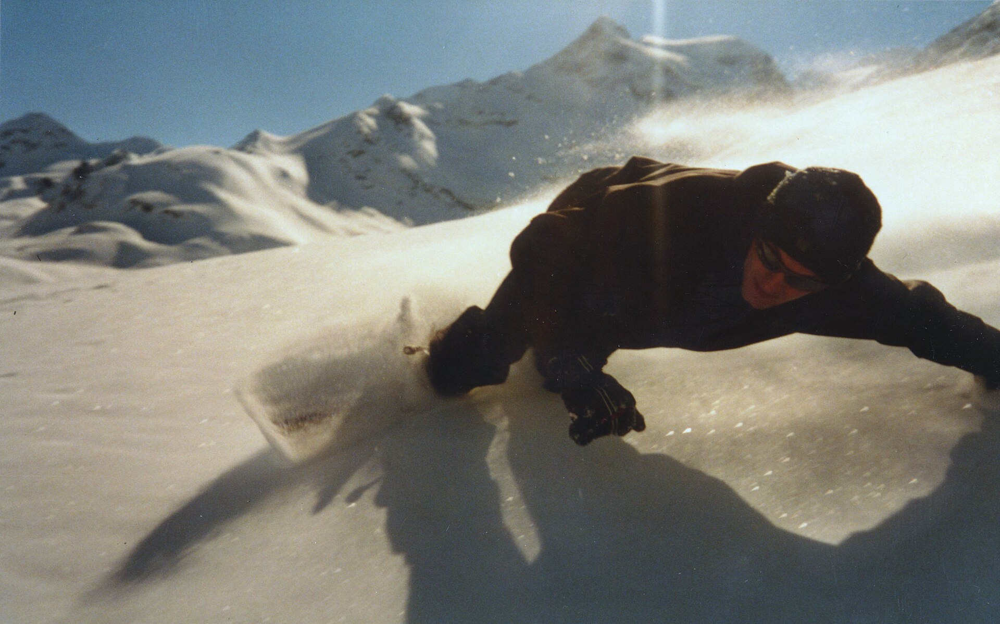
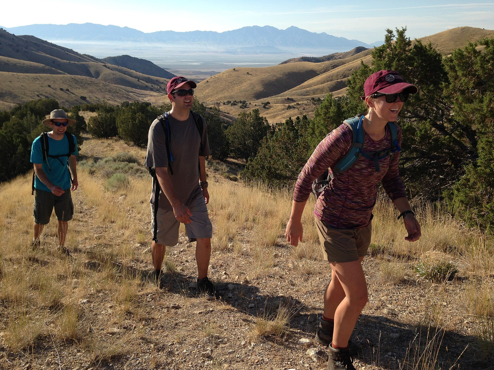

01极端环境适配系统
拒绝四季通用的平庸设计。针对高海拔低压、强紫外线、零下极寒、暴雪强风四大恶劣环境专项优化，每一件装备均对应具体地貌与气候场景。

OROGEN CORE LINE — 全站核心系列 / 60%
Professional Gear for High-Altitude & Snow Wilderness
专为高海拔雪山、极地雪原、荒野复杂地貌打造。从 5000 米入门雪山攀登，至 8000 米极寒绝境探险，OROGEN 以分层防护、轻量化抗造、极端气候适配的专业设计，支撑每一次奔赴旷野的征途。
WHY WILDERNESS LINE

01拒绝四季通用的平庸设计。针对高海拔低压、强紫外线、零下极寒、暴雪强风四大恶劣环境专项优化，每一件装备均对应具体地貌与气候场景。

02严格遵循国际高山探险分层穿搭逻辑：速干排汗内层 + 锁温保暖中层 + 防风防水硬壳外层，杜绝穿搭失误导致的失温、受潮、冻伤问题。

03旷野征途拒绝多余负重。在高强度防护、抗撕裂、耐寒防水的基础上，极致控制装备重量，适配长距离徒步、高海拔持续攀登需求。

LINE 01 — 旷野核心中的核心 / 资源 40%
为专业登山爱好者 / 雪山探险者 / 硬核玩家 / 地理科考从业者打造
高海拔最大杀手不是冷，是潮湿出汗。绝对拒绝纯棉——全程快速导湿、瞬干不粘身，静止不发冷、运动不闷汗。
隔绝外界低温、锁住身体热源，轻便不臃肿，方便叠加硬壳，不影响肢体攀爬动作。
抵御高山强风、暴雪、雨雪渗透与碎石刮擦，高海拔登山的最后一道防护屏障。
足部 / 背负 / 极地配件 / 安全器材，与三层穿搭构成完整高山系统。

LINE 02 — 雪地旷野延伸
主打户外野雪耐寒 / 防雪防水 / 抗摔防护 / 动作自由
雪地专用速干恒温体系，出汗不潮湿、御寒不发冷；轻薄高弹中层，不顶衣不臃肿。
高防水指数、防风锁温、宽松版型适配大幅度动作，袖口/下摆防雪灌入。
头盔、防雾雪镜、护臀护膝护腕、防水手套——摔倒撞击的核心防线。

LINE 03 — 全域旷野基础线
全季节旷野通行：防刮 · 防晒 · 透气 · 耐磨 · 全天候
夏防晒速干、春秋防风耐磨、冬季轻量保暖，多口袋弹力工装长裤覆盖全场景。
足部、背负收纳、户外配件，按单日 / 多日路线自由组合。
FIELD TRUTH / 专属干货
极端环境里，错误装备不是“不舒服”，而是真正的风险。四条用血与教训换来的原则。
纯棉吸汗后难以干燥，潮湿衣物在高海拔快速带走体温，极易引发高原失温。贴身层一律选择速干功能面料。
厚重棉衣束缚动作、增加负重，摔倒后进入积雪不易干燥。应选择分层功能穿搭：速干内层 + 轻量保暖中层 + 专业雪服。
软底鞋在碎石、岩壁路面缺乏支撑与防滑，极易磨脚、崴脚。按地貌选择带抓地大底与中底支撑的徒步鞋/靴。
所有旷野装备优先评估防水、保暖、耐磨等功能指标是否匹配路线，专业场景安全永远优先于版型颜值。
SMART MATCH